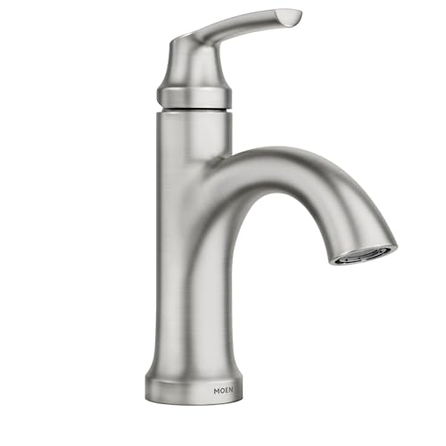
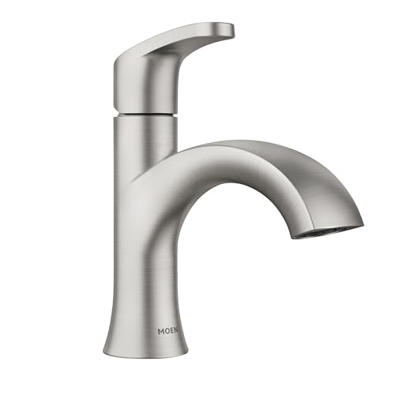
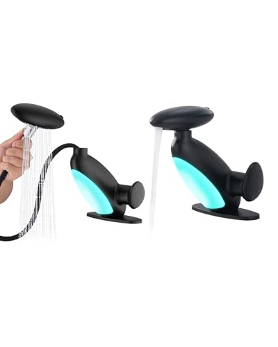
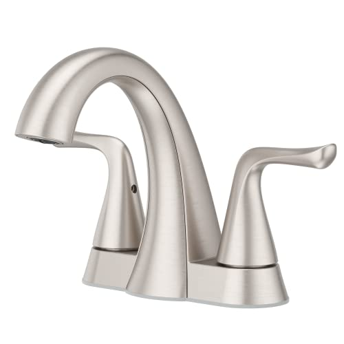
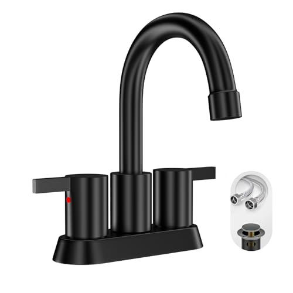
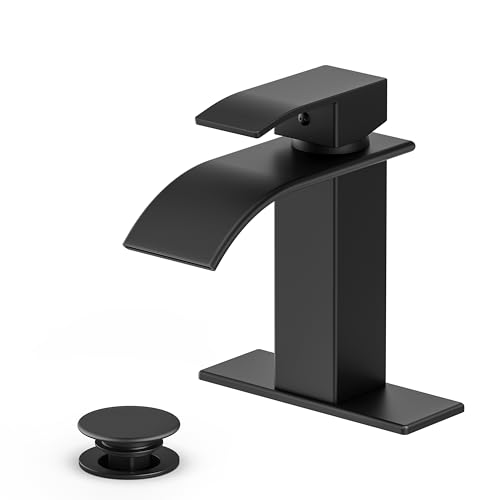
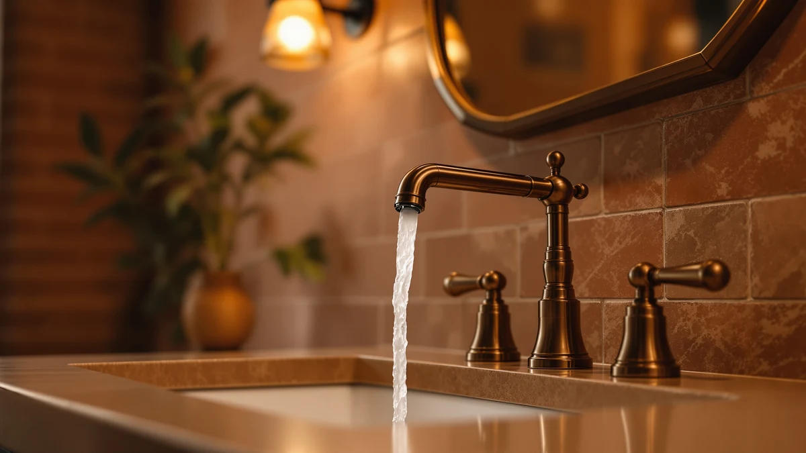
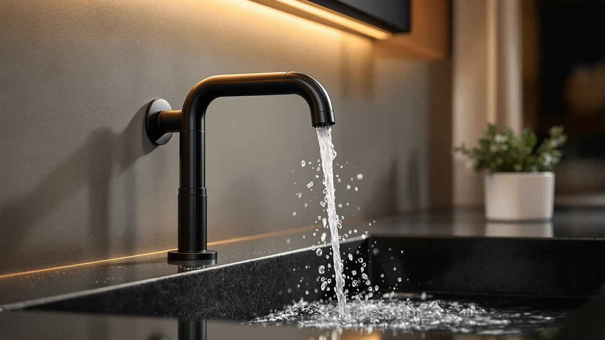

The valve you never see decides whether a faucet drips.
A bathroom faucet first has to match the holes already drilled in your sink: one hole, three holes 4 inches apart for a centerset, or 8 inches or more apart for a widespread. After fit, the ceramic-disc or cartridge valve inside decides whether it runs quietly for years or starts dripping, and the finish decides how often you wipe it. We compare faucets on fit, valve and finish, using spec sheets, current Amazon prices and what verified owners report.
Our 7 picks, side by side
From our full comparison of bathroom faucets. Each one wins a specific job.
| Pick | Product | Price | Buy |
|---|---|---|---|
| Best overall | Peerless Centerset Bathroom Faucet ChromeFamiliar, affordable, and easy to live | $38.76 | Check price |
| Best spot-resistant finish |  Moen Wellton Spot Resist Brushed Nickel One Hole Single-Handle Bathroom FaucetFingerprint-resistant nickel with Moen backing | $67.00 | Check price |
| Best upscale look |  Moen Karis Spot Resist Brushed Nickel One-Handle Single Hole Bathroom SinkA dressier Moen for a higher-end vanity | $76.50 | Check price |
| Best for kids' baths |  Pull Out LED Bathroom FaucetA pull-out spout with a color LED stream | $59.99 | Check price |
| Best centerset |  Pfister Willa 4 inch Centerset Bathroom Sink Faucet 2-Handle 3-Hole NSFA polished centerset from a trusted brand | $76.00 | Check price |
| Best two-handle |  Phiestina 4 Inch 2 Handle Centerset Matte Black Lead-Free Modern Bathroom FaucetA two-handle centerset for separate hot and cold | $27.99 | Check price |
| Best budget |  Ryuwanku Bathroom Faucet Matte Black Modern Waterfall Bathroom Sink FaucetModern matte black for the lowest price here | $26.09 | Check price |
Just published
New reviews and guides go up every day.

Pfister Willa Bathroom Sink Faucet Review

Pfister Courant Review

Pfister Venturi Review

Delta Broadmoor Centerset Bathroom Faucet Review
Find the right faucet for your sink
Guides and reviews from across the site, grouped by the question they answer.
Sink holes and mounting
- Best Faucets for Undermount Bathroom SinksComparison
- The Best Single-hole Vanity FaucetsComparison
- Best Tall Bathroom Faucets for Vessel SinksComparison
- The Best Widespread Bathroom FaucetsComparison
- Best RV Bathroom Faucets: Compact Picks for CampersComparison
- Single-Handle vs. Two-Handle Bathroom Faucets: Which Should You Buy?Comparison
+ 26 more in all articles
Touchless and easy-to-use faucets
- The Best Touchless Sink FaucetsComparison
- The Best Touchless Vanity FaucetsComparison
- Best Faucet Extenders for Toddlers: Safe Handwashing PicksComparison
- Touchless vs Manual FaucetComparison
- Best Bathroom Faucets for Arthritis: 7 Top PicksComparison
- Best Bathroom Faucets for Kids: 7 Top PicksComparison
+ 16 more in all articles
Finishes and styles
- Best Bathroom Faucet Finish for Hard WaterComparison
- The Best Gold Sink FaucetsComparison
- The Best Modern Bathroom FaucetsComparison
- The Best Chrome Sink FaucetsComparison
- The Best Brushed-nickel Vanity FaucetsComparison
- The Best Modern Sink FaucetsComparison
+ 23 more in all articles
Hard water, filters and pressure
- Best Bathroom Faucet Filter for SkinComparison
- Best Bathroom Faucet Water FilterComparison
- Best Bathroom Faucet for High Water PressureComparison
- Best Bathroom Faucet for Washing FaceComparison
- Best Bathroom Faucet for Low Water PressureComparison
- The Best Sink Faucets For hard waterComparison
+ 6 more in all articles
Install, fix and clean
- How to Clean and Shine Bathroom Faucets: Complete GuideGuide
- How to Fix a Leaky Bathroom Faucet: DIY Repair GuideGuide
- How to Replace a Bathroom Faucet Aerator: Step-by-StepGuide
- Best How to Install Bathroom FaucetGuide
- Best How to Clean Bathroom FaucetGuide
- Best Bathroom Faucets Without Plastic Parts: 7 Top PicksComparison
+ 4 more in all articles
Budget, brands and buying advice
- Kohler Bathroom Faucets vs Moen: Which Is Better?Comparison
- Bathroom Faucets Moen vs Delta: Which Is Better?Comparison
- Best Bathroom Faucet BrandsComparison
- Best Bathroom Faucet for Rental PropertyComparison
- The Best Vanity Faucets Under $200Comparison
- The Best Sink Faucets Under $200Comparison
+ 14 more in all articles
How we research
What we compare
- Fit: the holes in your sink (one hole, a 4-inch centerset or an 8-inch-plus widespread layout), plus spout height and reach over the basin.
- The valve: ceramic-disc or cartridge, and whether the brand sells replacement cartridges.
- Finish: brushed nickel hides spots best, polished chrome shows them soonest, and PVD coatings generally resist scratches better than plain electroplating.
- Price: Amazon's current price, checked every night.
- What verified owners report after months of daily use.
What we don't do
We don't run a lab, and we don't claim to have installed or handled these products ourselves. Our picks come from published specifications, current Amazon prices and what verified owners report again and again.
Every Amazon link on this site is an affiliate link. It never decides the ranking.
Common questions
Which faucets fit my sink?
Count the holes in the sink or countertop and, if there are three, measure between the centers of the outer two. One hole takes a single-hole faucet, three holes about 4 inches apart take a centerset, and three holes 8 inches or more apart take a widespread. Many single-hole faucets include a deck plate that covers a 4-inch three-hole sink; our single-hole vs widespread guide explains the trade-offs.
Why do some faucets start dripping so soon?
The valve is the part that wears. Ceramic-disc valves seal two hard discs against each other instead of a rubber washer, so they resist wear and hard water far better than older compression designs. When a cartridge or ceramic-disc faucet does drip, replacing the cartridge with the matching part from the same brand usually fixes it; see how to fix a leaky faucet.
Which finish hides water spots best?
Brushed nickel hides water spots and fingerprints best of the common finishes. Polished chrome wipes clean fast but shows spots as soon as it dries, so it needs the most frequent wiping. Our faucet finishes guide compares chrome, nickel, black, gold and bronze.